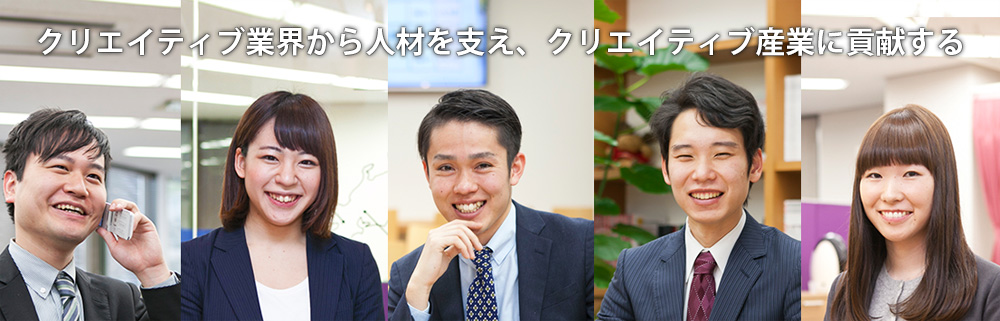
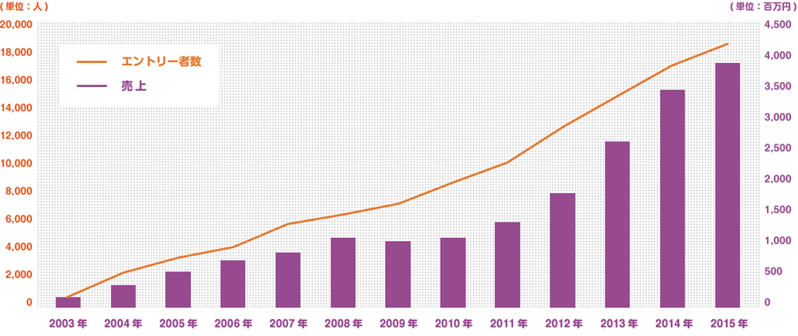

世界に誇れる日本のクリエイティブ産業。
その成長を牽引する企業と、現場でものづくりに打ち込むクリエイターとをコーディネート。
『もっと、クリエイターの気持ちに寄り添いたい。』
『もっと、クリエイティブ企業の期待に応えたい。』
その一心で、設立から13年間、フェローズは走り続けてきました。
「会社の成長を肌で感じられる。」「会社と一緒に自分も成長している。」そんな実感を口にする先輩が沢山います。
2015年度は、前年比116％超の売上成長を達成する見通し。2016年4月で設立14年目となり、
ご登録クリエイター数は19,000名、お取引先2,500社を超える企業として発展し続けています。
「Fellows（仲間・同志）と共に会社を、クリエイティブ業界を盛り上げたい」という一念のもと
社員一丸となって頑張っています。

フェローズは人材業界の中でも、テレビ、Web、広告・出版、ゲーム、アニメなどのクリエイティブ業界に特化した人材マネジメントを行っています。取り組む仕事にこだわりを持つことが多いクリエイターに、人材マネジメントサービスは必要不可欠です。
フェローズは、東京、札幌、仙台、名古屋、京都、大阪、福岡に加え2015年11月に金沢支社を開設。8拠点でマネジメントサービスを提供しています。今後も更なる拠点展開を予定、U・Iターンの希望にも応え、名実共に全国のクリエイターをサポートしています。
一人のエージェントが人材ニーズを持つ企業側と仕事を探しているクリエイターの双方の窓口を担当することにより、一層満足度の高いマッチングとスピーディな対応を実現しています。
エージェントには、自分一人の熱心な活動により契約を獲得し、企業とクリエイター双方のハッピーを作り出す達成感があります。
またフェローズでは、クリエイティブ業界専門の人材マネジメント会社として、社員全員が専門知識をつけ、より頼られる存在となることができるようバックアップ、読書や勉強会、情報共有などを積極的に行っています。
フェローズのエージェントは、クリエイター一人ひとりのビジョンをヒアリングし、目標に向かってステップアップすることを仕事の紹介を通じて実現しています。
クリエイターの中には、付き合いを重ねる中で独立・起業し、私たちのクライアントとなってくださる方も少なくありません。フェローズはそうした変化しながら続くクリエイター一人ひとりのワークライフを通して長いお付き合いをさせていただくことを前提に、心を込めたサービスを提供することで支持をいただいてきました。「フェローズなら、安心して相談できる」という信頼を築くことが、とても大切なのです。
皆様、こんにちは。株式会社フェローズ ヒューマンリソースセクションの関口拓人です。
採用業務や社内教育、社内制度作り・運営などの人事全般を担当しております。
この度はフェローズ2017年度新卒採用特設サイトをご覧くださり誠にありがとうございます。
フェローズは2016年4月に設立13年を迎え、14期目に入っていきます。そして皆様が入社される2017年4月は15期目に突入する節目の年になります。
皆様も聞いたことがあると思いますが、会社は作るよりも続けることのほうが大変です。企業の存続確立は設立から5年で15%（100社に15社）、10年で6.3%（100社に6社）、20年以上続くのは0.3%、つまり1000社に3社だけです。
ただ、僕らはその1000社のうちの3社になれると確信していますし、ゴールはそこではありません。僕らのゴールは、日本中のクリエイターを熱く支援し、それを通じて日本のクリエイティブ産業に貢献することです。
リーマンショック以降、毎年増収・増益で成長をしていまして、社員数も100名近くになり、拠点も全国8つになりました。成長し続けていますし、これからももっと成長していきます。ただ、どんなに会社が大きくなっても、創業時からのベンチャースピリットだけは忘れていません！
会社の成長だけでなく、社員の成長も早いというのも特徴の一つです。フェローズの平均年齢は比較的若く、若いうちから活躍できる環境があります。僕も2011年度に新卒で入社しまして、5年間エージェント（営業）を経験してきました。そして現在、人事部の運営を任されています。
エージェント時代は4年目からリーダーを任されましたが、早いと3年目からリーダー職に付く人もいます。人材エージェントというのは、ベテラン・若手といった年次に関係なく成果を出せる仕事です。それは物を扱っているのではなく、人と人の間に入る仕事だからです。つまり、その人の『人間力』が何よりもの武器になります。 これは人工知能に任せたり、オートメーション化できない部分です。故に僕らの仕事は無くならないですし、言うなれば自分自身の『人間力』が一番の商品になります。
ベンチャーマインドを持ち『人間力』を磨きながら営業をやっていきたいという方！是非一度、説明会にお越しください！もちろん、「まずは会社説明だけでも聞いてみたい」という方も大歓迎です！お会いできますのを楽しみにしております。
Copyright(C) FELLOWS Inc. All Rights Reserved.